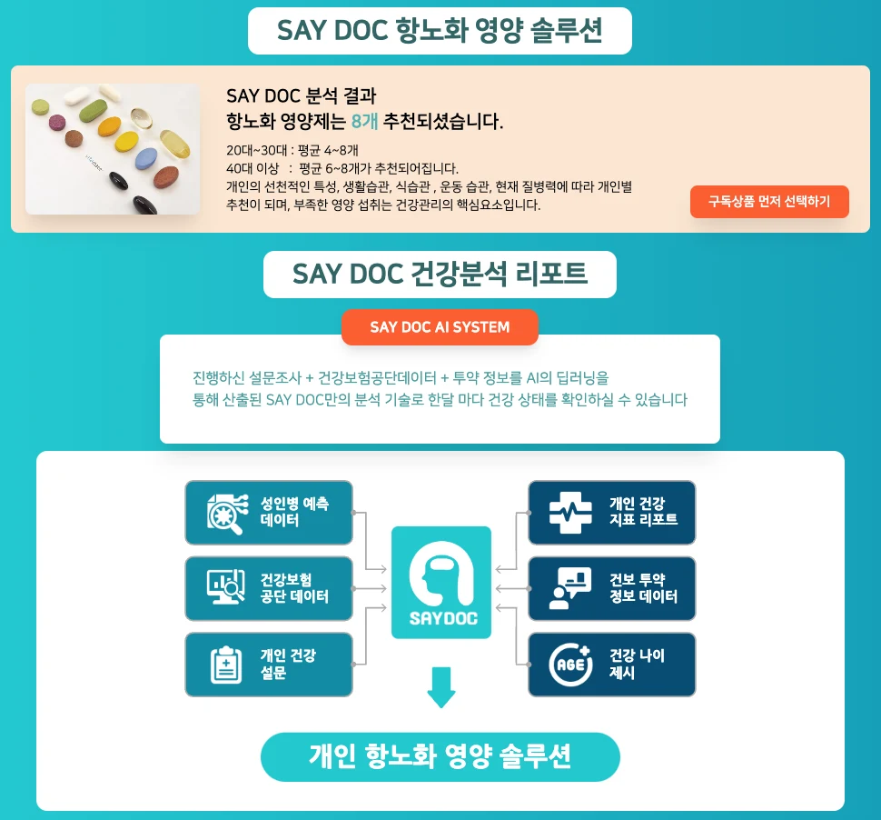
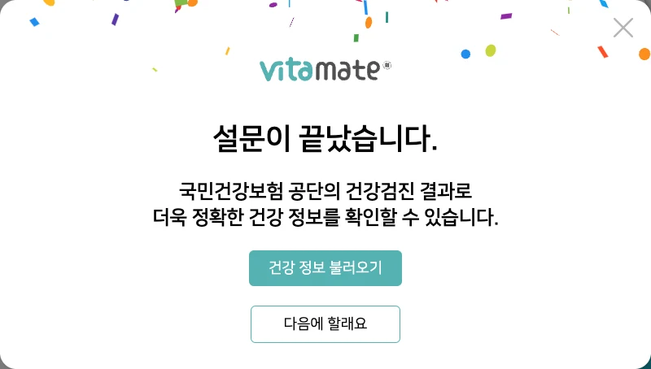
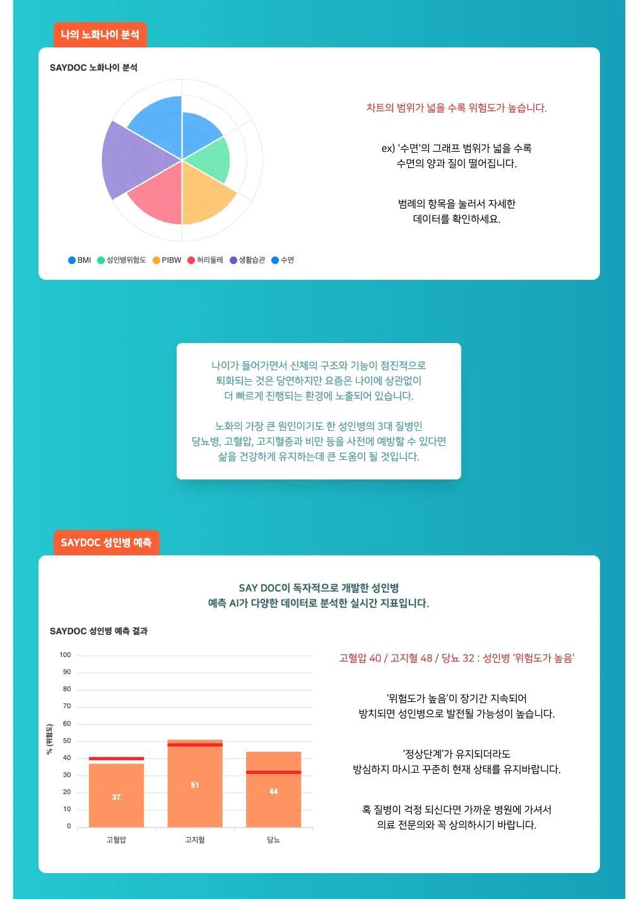
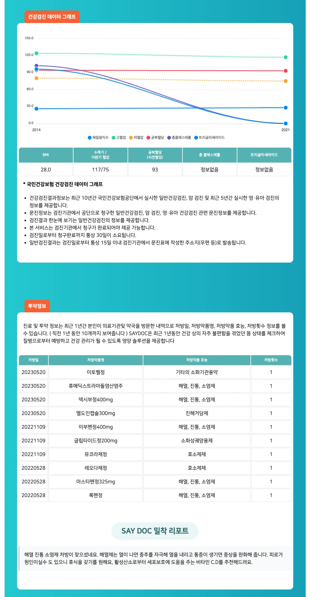
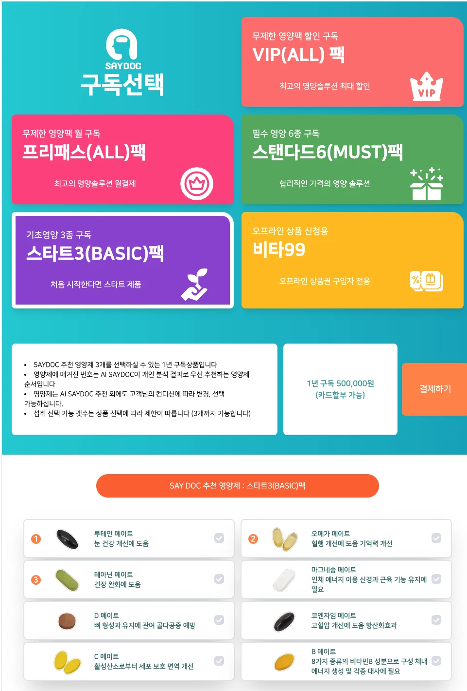
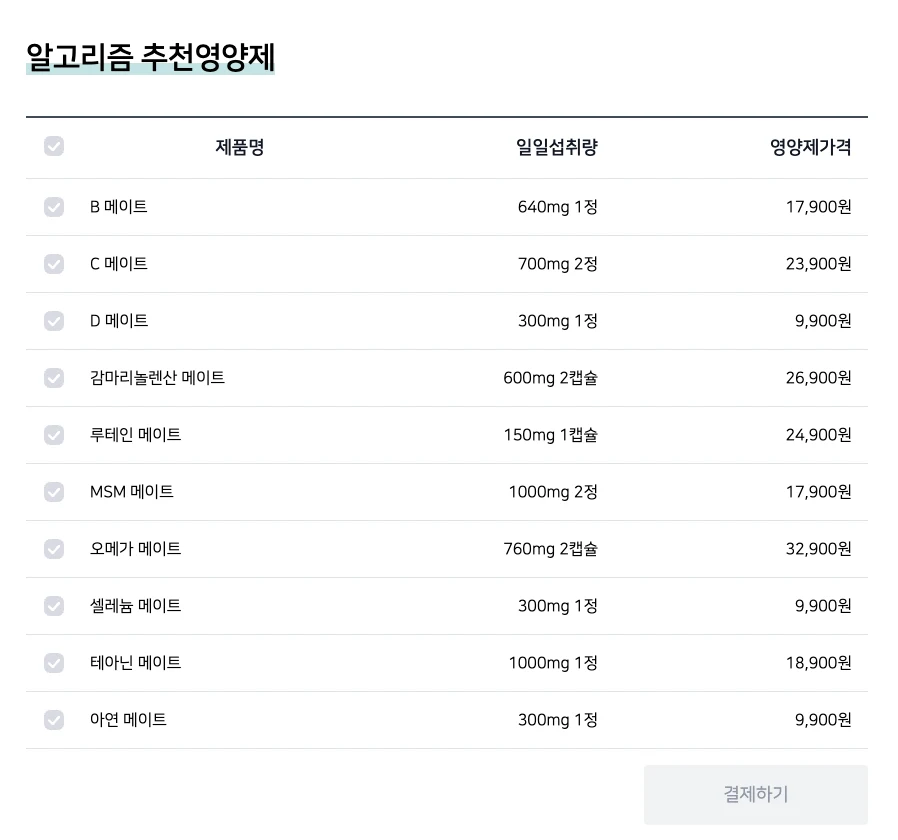
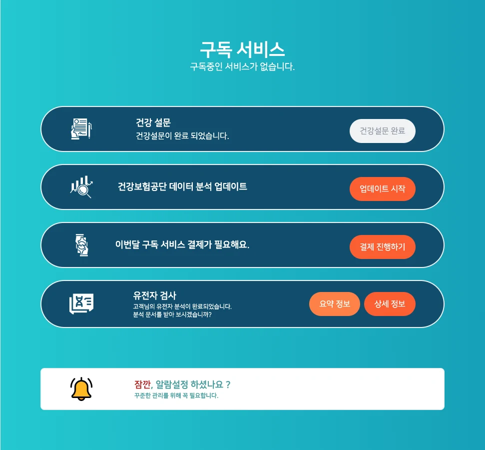
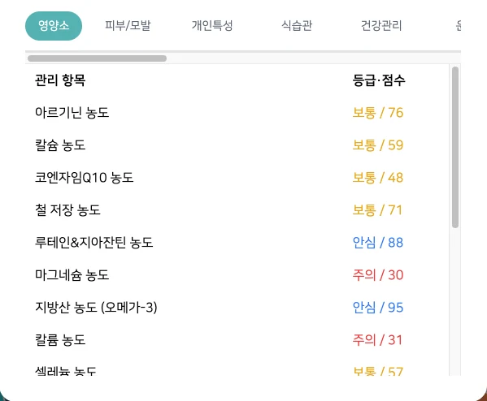

서로 다른 건강 데이터
문진, 건강검진, 투약 정보는 형식과 수집 시점이 다릅니다. 사용자가 정보 입력과 추가 데이터 연동을 이어갈 수 있는 흐름이 필요했습니다.
건강 설문과 검진 데이터, AI 분석을 개인별 영양제 추천과 구독 경험으로 연결한 헬스케어 서비스. 프론트엔드와 AI 통합을 리드하고, 핵심 기술의 특허출원 2건에 공동발명자로 참여했습니다.

Vitamate의 SAY DOC은 건강 설문과 개인별 분석 결과를 바탕으로 영양제를 추천하는 서비스입니다. 개발팀을 리드하며 건강 리포트, 추천 상품, 사용자 상태와 구독 흐름을 하나의 웹 경험으로 연결했습니다.
문진, 건강검진, 투약 정보는 형식과 수집 시점이 다릅니다. 사용자가 정보 입력과 추가 데이터 연동을 이어갈 수 있는 흐름이 필요했습니다.
AI 분석값을 리포트와 차트로 보여주고, 건강 정보와 추천 결과를 함께 살펴볼 수 있도록 구성했습니다.
추천받은 영양제를 비교·선택하고 구독 상품과 연결합니다. 설문 완료, 데이터 업데이트, 결제 상태가 다음 행동을 안내합니다.
건강 정보 입력에서 끝나지 않고, 분석 결과를 읽고 추천 상품을 선택하는 흐름으로 설계했습니다.
사용자 상태를 입력하고 설문 완료 상태를 확인합니다.
건강검진 정보를 불러오거나 다음 단계로 진행합니다.
건강 지표, 위험도와 검진 이력을 차트·표로 확인합니다.
개인별 추천 영양제와 상품 구성을 비교·선택합니다.
구독 방식, 결제 기간과 서비스 진행 상태를 확인합니다.
사용자 정보로 위험도를 추정하는 기술과, 그 결과를 바탕으로 섭취 주의 영양소를 제외해 추천을 구성하는 기술입니다.
국민 건강검진 데이터에서 학습에 필요한 정보를 추출하고, 사용자 신체 정보로부터 성인병 위험도를 산출하는 구조입니다. 데이터 전처리, 인코딩·디코딩과 위험도 계산을 구분합니다.
문진과 성인병 위험도, 건강검진·처방기록을 바탕으로 영양소팩을 구성합니다. 추가 데이터의 유무에 따라 조합하고, 특수 건강 상태에 따른 주의 영양소를 제외해 최종 추천을 결정합니다.
제공된 KIPRIS PDF(2025.09.26 저장본) 기준 공개 상태이며, 발명자는 조여정·김진혁·정윤필로 기재되어 있습니다. 위 내용은 해당 출원 문서의 요약입니다.
문진·신체 정보
건강검진·처방기록
학습된 모델로 위험도 추정
각 정보에 대응하는 영양소팩 선택
데이터 유무에 따라 영양소팩 결합
특수 건강 상태에 따른 주의 영양소 제외
2023년 제품 캡처에서 기능이 겹치는 화면을 정리했습니다. 화면을 누르면 큰 이미지로 확인할 수 있습니다.
설문 완료 후 건강검진 결과 불러오기와 ‘다음에 할래요’를 함께 제공합니다. 정보 연동 여부에 따라 사용자가 다음 행동을 선택할 수 있는 화면입니다.





이미지는 당시 제품의 표시 방식과 기능을 보여주는 기록입니다. 차트 수치는 모델 정확도나 임상 검증 성과를 의미하지 않습니다.
구독 서비스의 진행 상태와 유전자 분석 항목을 구분해 보여주는 화면입니다.


React·Redux-Saga 기반 프론트엔드와 Python·BentoML 기반 AI 연동 경험을 바탕으로, 추천 결과와 상품·사용자 상태를 함께 다루었습니다.
React / Redux-Saga
추천 결과, 상품 선택과 사용자 상태를 관리하는 프론트엔드 구조를 설계했습니다. 비동기 데이터 흐름을 서비스 화면과 연결했습니다.
Python / BentoML
개인화 추천 모델의 결과를 헬스케어 이커머스 경험에 통합하고, 모델 배포와 프론트엔드 연동을 담당했습니다.
Collaborative Filtering / Deep Learning
협업 필터링과 딥러닝 기반 추천 시스템을 제품에 적용했습니다. 위험도 추정과 맞춤형 영양소 추천 기술의 공동발명에 참여했습니다.
Vitamate 헬스케어 이커머스 플랫폼의 개발팀을 이끌며 제품 개발과 AI 통합을 진행했습니다.
React·Redux-Saga 기반으로 추천 결과, 상품·사용자 상태와 비동기 데이터 흐름을 관리하는 구조를 설계·구현했습니다.
개인화 추천 시스템을 사용자 경험에 연결하고 Python 백엔드·BentoML 모델 배포에 참여했습니다.
성인병 위험도 추정과 맞춤형 건강기능식품 추천에 관한 국내 특허출원 2건에 공동발명자로 기재되어 있습니다.
분석 결과가 사용자에게 전달되고, 개인별 추천과 상품 선택으로 이어지는 전체 흐름을 다룬 프로젝트입니다.